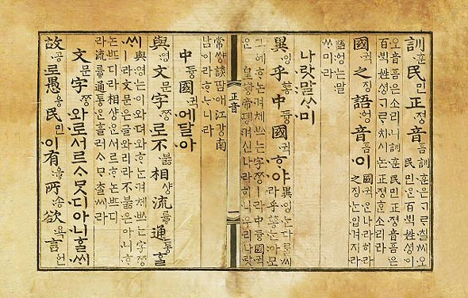
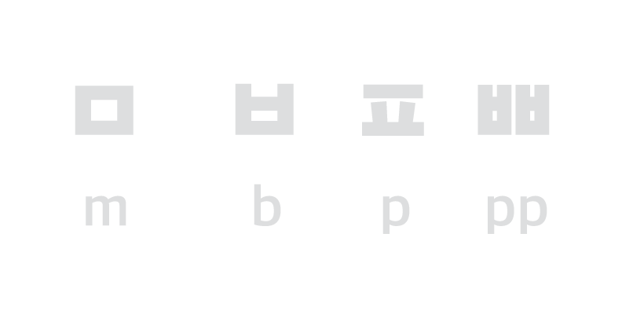
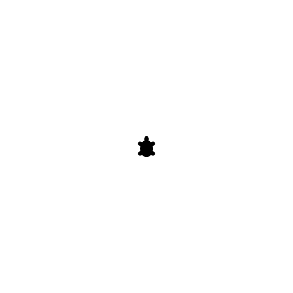
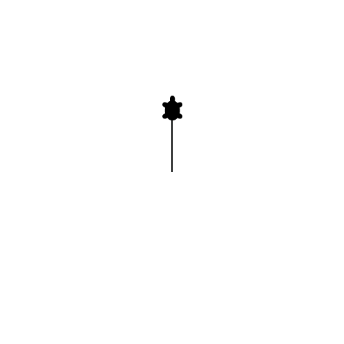
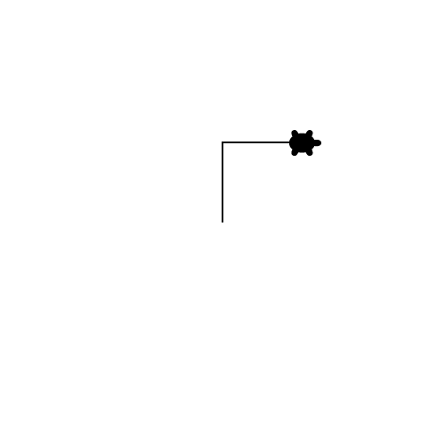
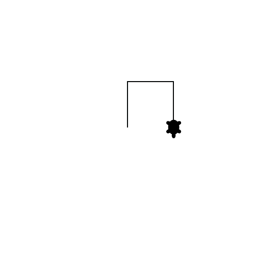
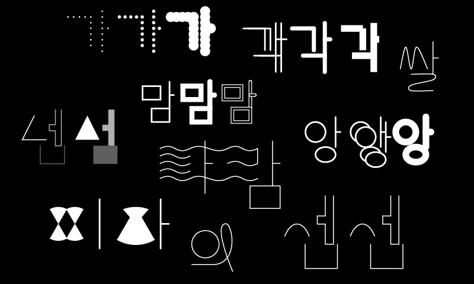

Type+Media
A Typography Course Based On Computer Programming
Dae In Chung, Maryland Institute College of Art
Jiwon Lee, Kookmin University, South Korea
Two Courses
Type+Media, 2015
DesignTech Workshop, 2016
Explore what Korean typography could be in the digital age, where screen, online communication, animation and interaction are considered common-sense.
Typography & Coding
Working with systems and rules that create letterforms.
Continuum
nothing physical. weight - light, regular, bold responds to conditionsMapping data to letterform
- distance
- temperature
- nuance
- emotion
- and more...
Ekstasy Type Club by Dae In Chung
iOS 10 Messages App
Adobe Max Project Faces
Metafont by Donald Knuth (image from Printing Code)
Meta-design is much more difficult than design;
it’s easier to draw something than to explain how to draw it.
— Donald Knuth, The Metafont Book
Maluma and Takete experiment by Wolfgang Köhler
Categorize sounds into groups based on their strength.
- Stops: p, b, t, d, k, g, c, q, x - 5 points
- Fricatives: f, v, s, z, h, c, x - 4 points
- Affricates / Nasals / Lateral: j, m, n, l - 3 points
- Approximant: w, r, y - 2 points
- Vowels: a, e, i, o, u - 1 point
- word score = total score / number of letters
User Aspect Design by Jiwon Lee
User Aspect Design by Jiwon Lee
Hangul
Korean written language
Hangul was invented by King Sejong in 1443.
Five basic consonants are designed after speech organs


g, k
n
m
s
-ng
Other consonants
Add strokes based on the strength of the sound

Add strokes based on the strength of the sound
Syllable
Modular Design
10,000+

Jae Joon Han / 한재준
Time for an exercise!
Think of a turtle at the center of paper.
You will create instructions for it to follow and move.
When the turtle moves, it leaves a trace.
I will give you a shape to draw.
Discuss as a group to decide what instructions/commands to use. Keep the instructions simple - words and numbers.
Half the group will give instructions to the other half who will execute them.
TO SQUARE
FORWARD 100
RIGHT 90
FORWARD 100
RIGHT 90
FORWARD 100
RIGHT 90
FORWARD 100
RIGHT 90
END
from Mindstorm by Seymour Papert
TO SQUARE
REPEAT 4
FORWARD 100
RIGHT 90
END
from Mindstorm by Seymour Papert
TO SQUARE:SIZE
REPEAT 4
FORWARD :SIZE
RIGHT 90
END
from Mindstorm by Seymour Papert
- Parameterize
- Function
- Modularize
- Iteration
Course 1: Type+Media, 2015
Instuctors: Dae In Chung & Jiwon Lee
Objectives
- Fundamentals of programming
- Systematic way of thinking and working
- Type that responds to conditions
Tools
Course Topics Overview
- Conditional Design
- Drawing with Code
- Variables & Functions
- Individual Projects
Conditional Design
...Our work focuses on processes rather than products: things that adapt to their environment, emphasize change and show difference...
— from conditionaldesign.org
Drawing with Code
What do we control?
Working with parameters and functions
Must have intentions
Yu Jin Kim / 김유진
Cheol Jun Lim / 임철준
Se Yeon Park / 박세연
Hyolim Sohn / 손효림
SunAh Hwang / 황선아
Saebom Lee / 이새봄
Shinjae Jung / 정신재
Course 2: DesignTech Workshop
Instructors: Jiwon Lee & Daegwon Kim
Objectives
- Fundamentals of programming
- Systematic way of thinking and working
- Type that responds to conditions
- Practical applications
Tools
Moved from Processing to p5.js. It is similar to Processing.
It works on the web.
Course Topics Overview
- Conditional Design
- Selective topics on programming
- Individual projects
Conditional Design
Instead of creating random visual artifacts, build instructions that will create Korean letterforms.
Programming fundamentals
function — type design
coordinates — type setting
variable, loop, conditional — animation, interaction
automata — Hangul character input
Things We Learned
- Designer's perspective
- Team teaching
- Design process
- Communication
Challenges
- Programming is hard...
- One semester is not long enough.
- Loss of interest; no further opportunity
- Nobody to ask questions.
Do designers have to code?
All artists and designers in the 21st century should have experience programming their own software… If the person is unable to shape the tool they are shaped and moulded by another person’s idea of what the software is and what software can be.” — Casey Reas
Paper.js by Jürg Lehni
What machines can do and what designers can do